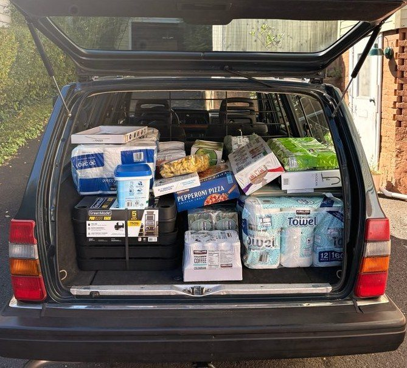
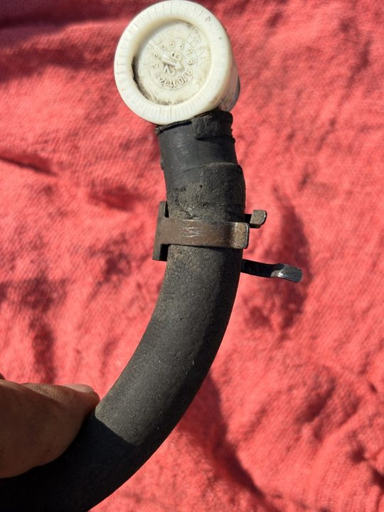
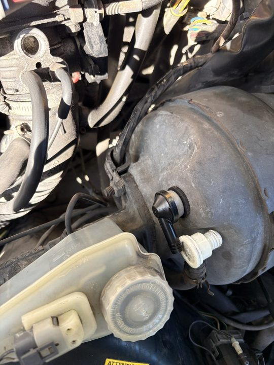
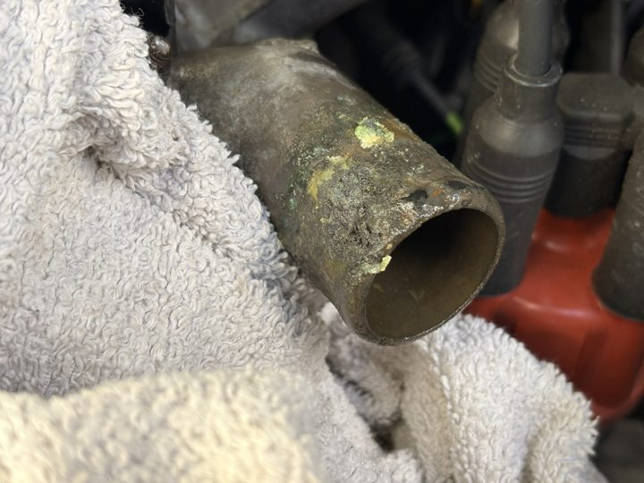
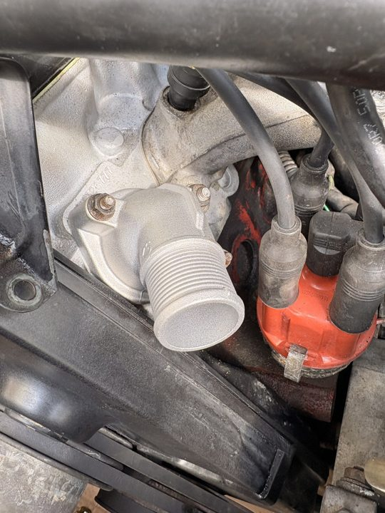
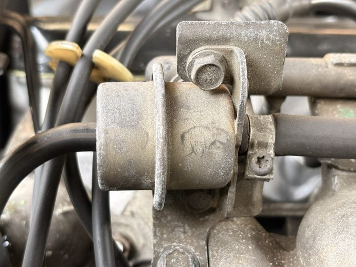
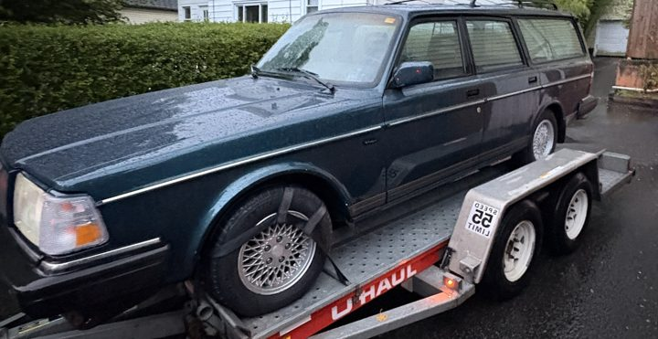
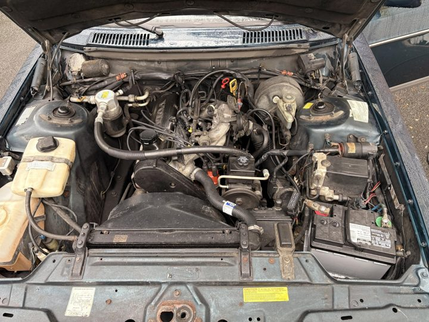
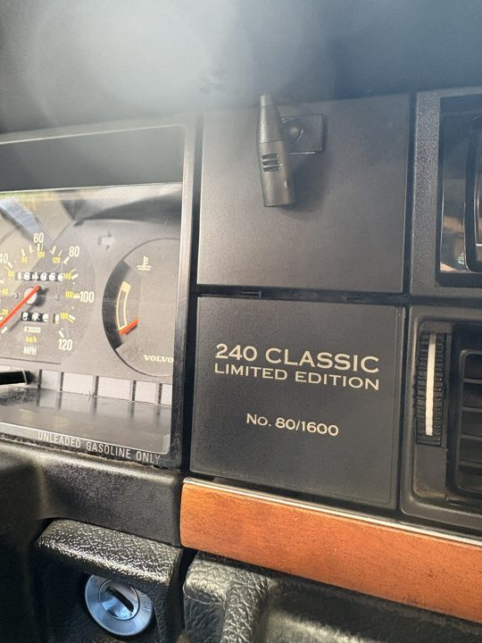

Wilma
1993 Volvo 240 Classic wagon, dark green, No. 80 of 1,600. A Florida car, here since September 1, 2026.
162,785 miles as of . 1,306 since I bought her.
- In the deckDeep Cut Cocktail Hour54:24
Log 
Newest first, with the odometer where I read it.
- Snow caps on the cowl. A black velour cover over the cracked dash.
- Highway at 70–75, no shake. Floored her up a long grade and she kicked down. No check-engine light since the new coil.162,785

- Two test loops from now on, one hilly and one flat, so every fix gets checked on the same roads.
- Hill loop, fully hot: held fourth at 45 up the long climb, picked third on her own.
- Idle air valve cleaned in place.
- New trim on a rear door.
- New ignition coil, fitted in the driveway. Smooth that evening, no stalling at stops.162,691
- Undercoated with wool wax, before her first salt winter.
- New intake boot and crankcase breather hose. Throttle cable adjusted, throttle body cleaned.
- Check-engine light: lean codes, so air is getting in somewhere.
- New brake booster check valve and vacuum hose, in the driveway.


- New radiator, thermostat and housing, and both radiator hoses. Flushed and refilled in the driveway.


- Steering wheel wrapped. Headlights polished. New grille badge.
- New front brake pads.162,288
- The engine tick is normal. Every B230 on YouTube has it.
- New fuel pressure regulator and both its hoses. Starts and sounds better right away.161,882
- Found fuel in the regulator’s vacuum hose, so its diaphragm is leaking.

- Torqued the lug nuts to spec with a new torque wrench.
- First fault-code read: all clear. Then her first long highway run, about 120 miles at 70–75, no trouble.161,681
- Flame trap and its cracked hose replaced.
- Transmission fluid was 1.5 quarts low. Topped up, and she takes hills fine now.
- Heat and A/C both work. On a night drive with everything on, the charging holds.
- Home from the shop: new alternator, a corroded ribbon wire in the cluster bypassed, 17 new bulbs.161,537
- Into the shop for the charging fault.
- Traced the charging fault to the instrument cluster.
- Fuel gauge dead. Running off the trip meter.
- Four new tires. All sixteen dash fuses replaced. Driveway tests: she isn’t charging.161,497
- Registered. First real drive, an afternoon of errands, every start clean.
- Home on a trailer.


- Bought her.161,479



The long version is on Turbobricks.